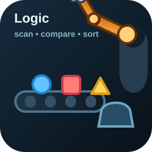
Open simulationPlant / schematic
Interactive controls
Tap opening directly changes the target flow, the falling water stream, and the heater response.
Select a learning activity to open an interactive simulation or experiment. This start page can grow into a small course hub.

Arrange the controller steps for a robotic arm that inspects shapes on a conveyor, lets the target part pass, and rejects the wrong ones into a bucket.
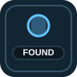
Compare a blinking LED output example with a press-and-hold digital input that immediately drives the LED state.
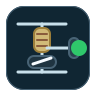
Compare pull-up and pull-down resistor wiring with a button, a GPIO input, and an LED that follows the logic level.
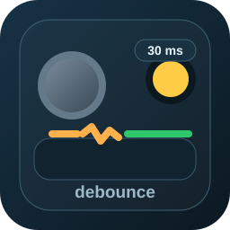
Watch a mechanical push button bounce, apply a configurable debounce delay, and see when the filtered press is finally accepted.
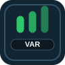
Read a changing value, store it in variables, transform it, and map it to an output and a timeline.
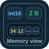
Compare bool, signed and unsigned integers, and float, then inspect exactly how each value is stored byte by byte in memory.
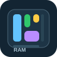
Allocate several variables together, compare the total bytes they consume, and see how declaration order fills RAM.
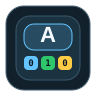
Explore how a `char` stores one ASCII symbol, compare decimal, hex, and binary, and inspect the single byte that appears in memory.
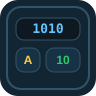
Explore decimal, binary, hexadecimal, bit weights, and signed two's complement using the same raw bit pattern.
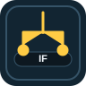
Compare a basic condition, nested conditions, and threshold comparisons with LED outputs and time plots.
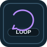
Explore repeated LED sequences and see how a for-loop and a while-loop change the same system over time.
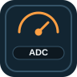
Move an analog signal through the ADC range and observe the raw reading, voltage, and mapped PWM response.
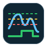
Show noisy threshold chatter first, then compare one-threshold switching against two-threshold hysteresis with a live state diagram.
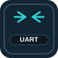
Send serial frames across a simulated UART link and follow TX, RX, queueing, and acknowledgement in the timeline.
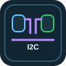
Write a byte from an I2C master to a slave and watch SDA, SCL, and ACK activity on the bus.
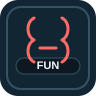
Reuse one function with different parameters and compare repeated output patterns with a live code example.
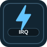
Compare immediate interrupt handling against slower polling and make the response timing visible.
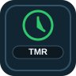
Put `delay()` and `millis()` side by side and see why blocking code affects event handling over time.
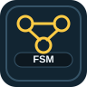
Run a traffic-light state machine, request transitions, and study the sequence directly on the timeline.
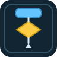
Paste Arduino C++ and generate a teaching-friendly flowchart that highlights setup, loop, decisions, loops, and I/O blocks.
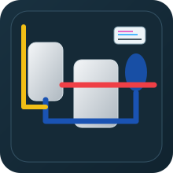
Interactive heater plant with tap control, temperature setpoint, inlet temperature, flow response, and signal timelines.
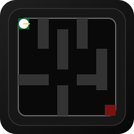
Maze challenge with keyboard control, score tracking, and direct UART movement commands from the ESP32.
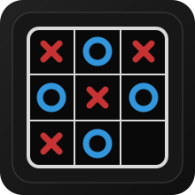
Browser-based Tic-Tac-Toe with the original UART handshake, move exchange, and rematch flow used by the pygame version.
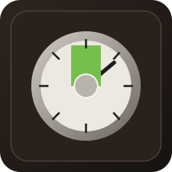
UART-driven kitchen timer with a circular dial, adjustable maximum scale in the GUI, and limit vibration when the ESP32 value reaches the end.
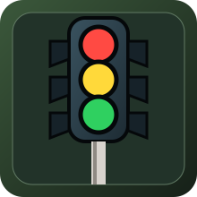
UART-driven traffic light monitor with live state display, state-diagram circles, and millisecond timing history for each finished color.
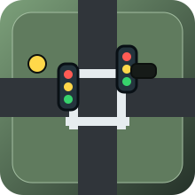
Street-crossing simulation with main and side traffic lights, walk lamp, walk button, and side-street sensor controlled through UART.
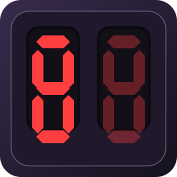
UART-driven twin 7-segment display visualizer that renders the exact segment bits received for the left and right digits.
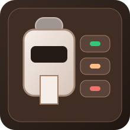
HTML experiment with local fallback and UART connection to the ESP32, following the same drink-selection protocol as the pygame project.
memory, timer, UART, or traffic.Space toggles the tap, P pauses the simulation, and the sliders update the plant and the signal lines in real time.
Tap opening directly changes the target flow, the falling water stream, and the heater response.